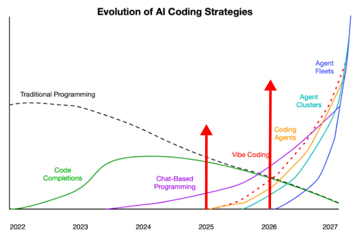
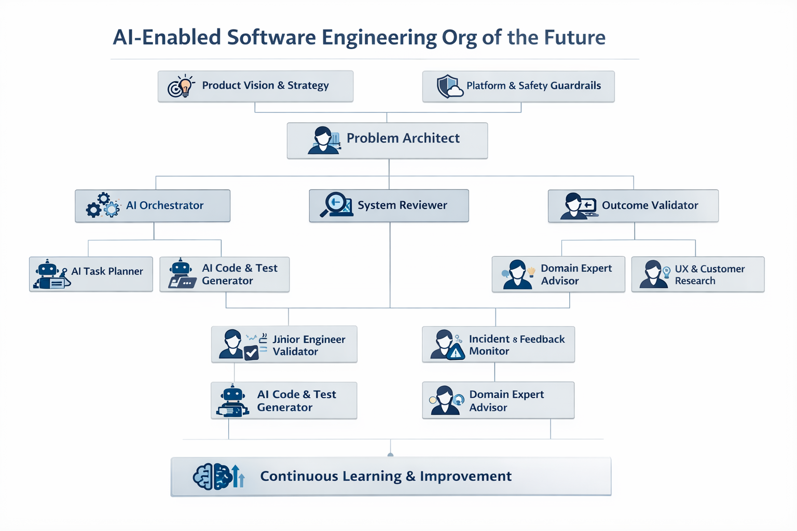
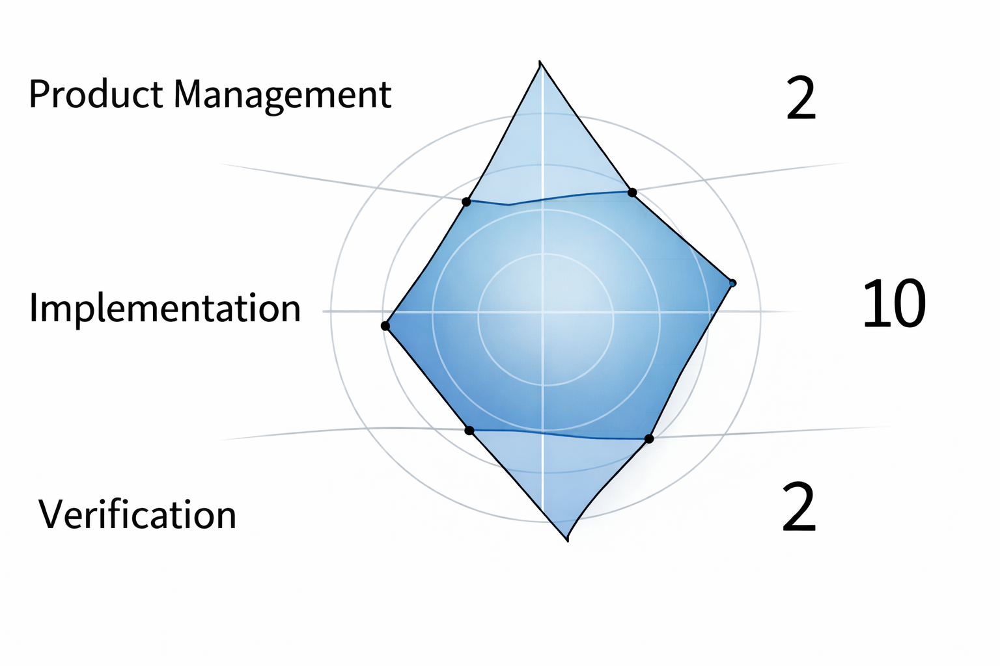
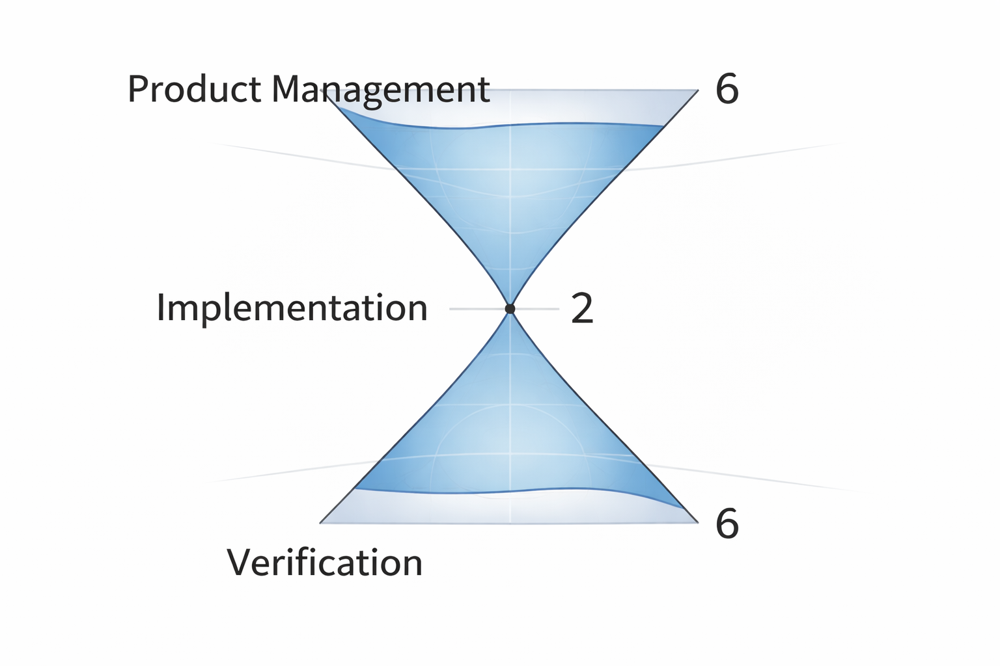
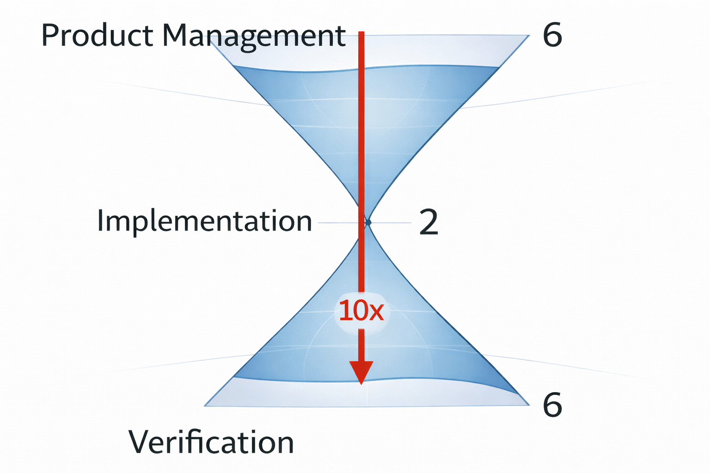
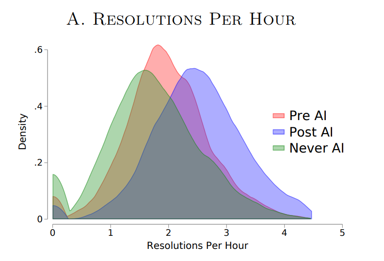
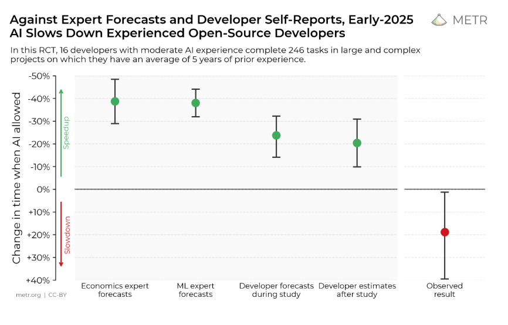
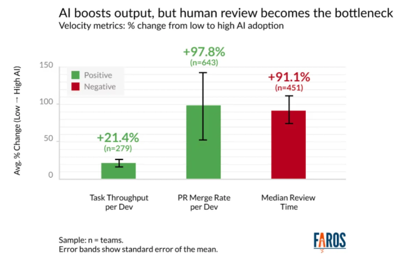
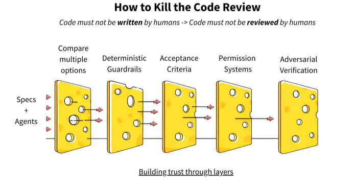
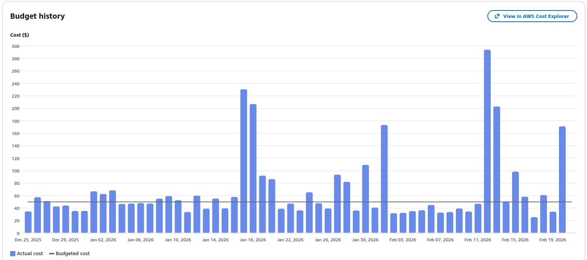

Augmented Software Engineering
State-of-the-Union @ OneView
11-Mar-2027
roland@tritsch.email
Welcome/Objective
- Augmented Software-Engineering
- Skate to where the puck is going to be
- Today, this year and beyond
- The opportunities and the challenges
Objective/Motivation/Why

Objective/Motivation/Why

Objective/Motivation/Why

Objective/Motivation/Why

Objective/Motivation/Why

Who

Today
- Multispeed adoption
- individuals vs. organisations
- tasks (5x) vs. results/impact (0.5x)
- by size (small(er) eq. fast(er))
- by industry (regulated)
- by lifecycle (prototype vs. maintenance)
- It is easy to feel slow :)
Today - The Task/Firm Gap
- AI studied on 5,179 customer support agents (randomized trial)
- Average productivity gain: +14%
- Novice/low-skilled workers: +34%
- Experienced/highly skilled workers: near zero
- Caveat: data from 2022/early 2023 — pre-GPT-4 era tools
"Access to the tool increases productivity by 14% on average, with large heterogeneity: a 34% improvement for novice and low-skilled workers but minimal impact on experienced and highly skilled workers." — Brynjolfsson, Li, Raymond — "Generative AI at Work", QJE 2025 (NBER WP 31161)

Today - Task-Level Productivity: The Surprise
- METR ran a randomized controlled trial (July 2025)
- 16 experienced developers, 246 real issues in large open-source codebases
- Used Cursor Pro + Claude 3.5/3.7 Sonnet — state of the art tools
- Result: developers took 19% longer with AI than without
"When developers use AI tools, they take 19% longer than without — AI makes them slower. The gap between perception and reality is striking: developers expected AI to speed them up by 24%." — Becker, Rush, Barnes, Rein — METR, July 2025 (arXiv:2507.09089)

Today - Challenges
- Low signal to noise ratio (noise is high(er))
- No established adapation/maturity frameworks (for organisations)
- Confusing, Frustrating, Intimitating, Threatening, …
Today - Opportunities
- Continue to level-up (as individuals)
- Develop your own adoption framework/style (as organisations)
- Spec-Driven Design vs. Pair-Programming
- Standardization, Agents, Agents-Automation
- Invest in
*-as-Code(to get ready for what comes next)- Infrastructure, Architecture, Test (coverage, mutation, …)
Today - (My) Suggestions
Invest in your …
- business-domain know-how
- ability to read/review artifacts (a lot and fast)
- ability to express requirements (what needs to be build)
- ability to express how good/right looks like (definition of done)
- tools and tooling (voice, playwright, mermaid, …)
This year - Challenges
- The new burn-out. Too much …
- reading, context-switching, "change"
- Shifting the time/money budget
- Learning/Tooling/Doing - 10/20/70 - 20/30/50
- Quality/trust erosion (review fatigue, hidden technical debt)
- Hiring signal collapse (the AI-native junior cohort arrives)
This year - Opportunities
- Address the stress (reviews, …)
- (Start to) Think different (again) …
- Build a system to build systems
- Flying the plane. Building the plane. (Re)Building the factory
- How to scale horizontally?
- Single-Engineer/Agent vs. Multi-Engineer/Agent
Review the review

Review the review

This year - Opportunities
- Address the stress (reviews, …)
- (Start to) Think different (again) …
- Build a system to build systems
- Flying the plane. Building the plane. (Re)Building the factory
- How to scale horizontally?
- Single-Engineer/Agent vs. Multi-Engineer/Agent
This year - Agent-Management Platforms
- Kubernetes for Agents
- Not working towards
up, but towardsdone(nothing to do) - Gastown, Agent-Flywheel, CrewAI, …
- Mixed experience/results (with Gastown)
- Buggy, patience, cost, …

Beyond
- Living in a world with no constrains? An abundance of solutions?
- You do not need to prioritze anymore. Everything can be built!
- The bottleneck is to describe problems that need solving in a way so that they can be solved (e.g. with a measurable definition-of-done)
Wrap-Up/Questions